网络安全等级保护测评要求.docx
2.4 MB · Word 文档
Proofing Desk · 为文档转换而做的校样台
Proofing Desk（校样台）：把「转换、清洗、质量检查」做成看得见的状态与批注，而不是上传/下载网页或命令行输出。界面首先是一个工作台：标准导航、标准控件、可扫描的数据；世界只贡献字体、颜色、密度和一个签名动作——红蓝校对记号。
窗口使用 Tauri titleBarStyle: Overlay，系统红绿灯浮在 48px 高的整宽标题栏上；左侧固定留出 84px，避免控件与红绿灯重叠。标题栏同时承接全局操作，页面内不再重复放语言、主题与搜索入口。
| 区域 | 内容 | 行为 |
|---|---|---|
| 左 | 侧栏折叠、搜索 | 折叠后侧栏宽度归零，状态写入本地存储；搜索打开 Cmd+K 命令面板 |
| 中 | ManoDoc | 只读文本，可拖动窗口 |
| 右 | 中文 / EN、主题 | 即时生效并写回设置；原型中的状态选择器不进入产品 |
surface-2、下边框 line；图标按钮 30×30、圆角 6px，图标 17px；焦点环使用 focus token；关闭侧栏后主区自动占满，1280 与 1440 宽度下都不得出现横向滚动。主色不是装饰：墨色承担主操作，校样红承担警告、错误与校对记号，修正蓝承担当前、选择、信息与聚焦，绿色只承担成功。浅色与深色使用同一套语义 token，不直接写 hex。
| Token | 浅色 | 深色 | 用途 |
|---|---|---|---|
| --bg | #F2EFE6 | #141412 | 画布 |
| --paper | #FFFDF8 | #2A2A23 | 校样纸、输出卡片 |
| --surface | #FFFDF8 | #1D1D19 | 卡片、侧栏、输入框 |
| --surface-2 | #FBF8EF | #24241F | 侧栏、面板、表头 |
| --ink / --ink-2 / --ink-3 | #161616 / #3A382F / #55524A | #F2EFE6 / #D5D0C3 / #A8A396 | 正文 / 次要 / 辅助 |
| --red / --red-soft | #B23A2E / #F7E6E1 | #E06353 / #3A211D | 警告、错误、校对记号 |
| --blue / --blue-soft | #2F5D8A / #E6EDF4 | #7FA8D2 / #1C2A38 | 当前、选择、信息、聚焦、修正 |
| --green / --green-soft | #2F6B4F / #E4EFE6 | #7FB897 / #1D3027 | 成功、完成 |
| --amber / --amber-soft | #8A5A12 / #F7EDD8 | #D8A657 / #332713 | 需复核、部分符合 |
UI 用系统无衬线，文档正文示例用编辑衬线，批注与代码用等宽。三种字体各司其职，不做「全站衬线」的复古表演。
| 层级 | 字号 | 字重 | 用途 |
|---|---|---|---|
| Display | 34–40 | 800 | 页面标题（转换/批量/历史/设置） |
| H2 | 20–24 | 700 | 区块标题、文档章节 |
| H3 | 16–18 | 650 | 卡片标题、面板标题 |
| Body | 14 | 400 | 正文、说明 |
| Label | 12–13 | 600 | 表单标签、表头、状态 |
| Micro | 12 | 700 | 徽标、计数、快捷键；不低于 12px |
8pt 网格；同一页面只使用一套间距节奏。标题上方留白大于下方；表格行高 44px，按钮高度 36–44px。
默认 1px 边框；只有浮层（对话框、命令面板、下拉）使用阴影。阴影带偏移与柔化，不做彩色光晕。
桌面应用外壳：顶部 48px 整宽标题栏（系统红绿灯、侧栏折叠、命令面板、语言/主题），左侧 216px 导航，主内容 8pt 网格。文档转换页为居中 760px 配置卡（文件、方向/引擎、预设），转换进度与错误内联在卡内，不提供文档预览；语料制作页为「筛选 + 队列 + 右侧配置（清洗、切块、语料）」；转换历史页为「全宽任务列表 + 详情弹窗」；系统设置页为「分组导航 + 表单」，包含通用、引擎、输出、预设、日志与关于。
2.4 MB · Word 文档
| 尺寸 | 侧栏 | 内容 | 说明 |
|---|---|---|---|
| 1440×900 | 216 | 剩余宽度 | 配置卡居中，最大 760 |
| 1280×800 | 200 | 剩余宽度 | 配置卡自适应，无横向滚动 |
| 最小窗口 | 可折叠 | 单列 | 配置卡优先 |
所有交互组件必须有 default / hover / focus / active / disabled / loading / error 状态；不允许只做默认态。
主按钮使用墨色，红色只用于危险操作；不使用渐变、发光或玻璃。
选择器：全部使用 shadcn/ui Select（Radix Select），不使用浏览器原生 select。触发器沿用 7px 圆角、1px line-strong 边框与 13px 字号；浮层使用 surface、shadow 与 surface-2 高亮，选中项左侧显示修正蓝对勾。方向行内的选择器去边框，与源格式文字同行。
弹窗：全部使用 shadcn/ui Dialog（Radix Dialog），遮罩覆盖窗口，面板固定屏幕正中；Esc 与遮罩点击可关闭，关闭后焦点回到触发元素。内容面板继续使用 history-modal 的纸张、圆角与阴影。
源格式自动识别；目标格式只列兼容项；同一方向有多个引擎时提供「自动 / 显式引擎」选择，显式选择优先。
Word → Markdown · 3 个引擎可用；自动优先 anydoc，失败或质量不足时回退 xberg。
统一图标语言：左侧格式色块 + 白色格式字母，右侧内容面板。转换页 46px，列表 18px，方向矩阵 16px；缺失时回退综合文档。
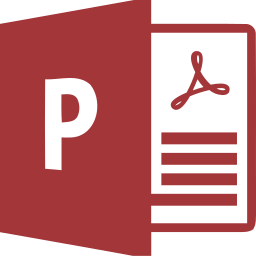
PDF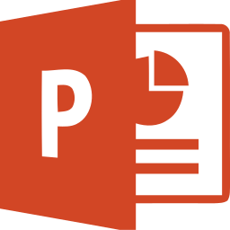
PowerPoint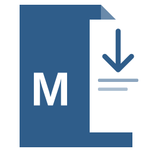
Markdown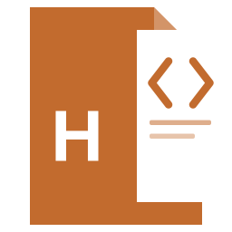
HTML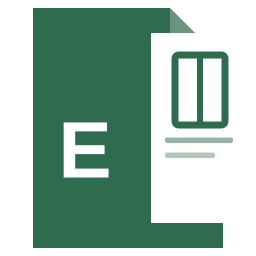
EPUB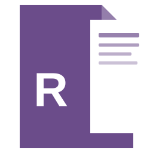
RTF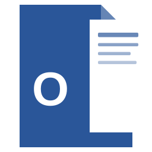
ODT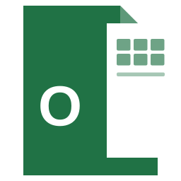
ODS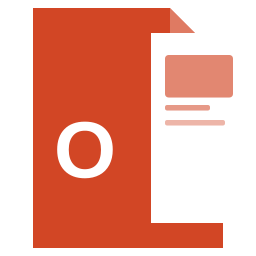
ODP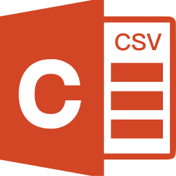
CSV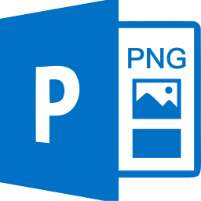
PNG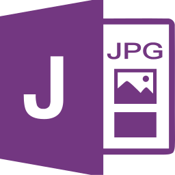
JPG62% · 清洗中 · 3/5 文件
转换进度、成功、错误与无权限状态直接出现在配置卡内，不切换页面、不打开右侧面板。错误必须给出可执行的下一步；成功态提供打开输出与输出目录。
正在转换 · 第 24 / 50 页 · 62%
E_NEEDS_OCR · 第 1 页没有文本层。
转换完成 · GB-T-28448.md · 打开输出 / 打开输出目录
E_PERMISSION_DENIED · 在系统设置授权文件夹，或更换目录。
拖入文件或选择文件。支持 docx / pdf / xlsx / pptx / md / png / jpg。
E_NEEDS_OCR · 该 PDF 第 1 页没有文本层。可跳过该页，或安装 OCR 组件。
需要在系统设置中允许访问该文件夹，才能写入输出。
历史页保持全宽列表；点击任务打开弹窗，聚焦查看预设、方向、输出格式、引擎、输出与警告。Esc 或关闭按钮退出，焦点返回触发行。
单文件转换 · 2026-11-18 14:32
基础一对一方向全部可达；同一方向多引擎时在转换页选择。PDF→Word 与 Markdown→PDF 标注质量/渲染器限制。
| 输入 | 输出 | 引擎 |
|---|---|---|
| Word | Markdown | anydoc · xberg · pandoc |
| Markdown | anydoc · xberg · Marker | |
| Word | PDF→MD→Word · pandoc · 目录/图片保真有限 | |
| Markdown | Word | pandoc |
| Markdown | pandoc + PDF renderer | |
| Markdown | HTML / EPUB | pandoc |
| PNG / JPEG | Markdown | xberg · PaddleOCR · Marker |
| Excel / CSV / ODS | Markdown | anydoc · xberg |
| PowerPoint / ODP | Markdown | anydoc · xberg |
| HTML / RTF / ODT / EPUB | Markdown | anydoc · xberg |
~/.manodoc/runtimes/<engine>/.venv 创建隔离环境；Python 由 uv 按需下载，下载前显示版本、体积与来源并等待确认。默认跟随系统；用户可切换浅色 / 深色。所有颜色来自语义 token；组件不得写死 hex。切换即时生效，保存到 ~/.manodoc/settings.json。两种主题都必须满足对比度 AA。
中文默认，英文完整；切换无需重启。文案遵循「动词 + 对象」；错误信息给原因与下一步；不使用仅靠颜色传达状态。
| 场景 | 中文 | English | 规则 |
|---|---|---|---|
| 主操作 | 开始转换 | Start conversion | 动词开头，不堆敬语 |
| 空状态 | 把文档拖到这里，或选择文件 | Drop a document here, or choose a file | 说明支持格式 |
| 错误 | 第 1 页没有文本层，可跳过或安装 OCR 组件 | Page 1 has no text layer. Skip it or install the OCR component. | 原因 + 下一步 |
| 状态 | 清洗中 · 3/5 | Cleaning · 3/5 | 状态 + 进度 |
英文长度可能比中文长 30–50%；按钮与标签使用弹性宽度，不做固定像素截断。
Cmd+K 打开；覆盖页面跳转、转换动作、主题/语言切换、最近文件、打开输出目录。输入即过滤，↑↓ 选择，Enter 执行，Esc 关闭。危险操作（清空历史、覆盖输出）在面板内二次确认。
| 分组 | 示例动作 | 快捷键 | 备注 |
|---|---|---|---|
| 前往 | 文档转换 / 语料制作 / 转换历史 / 系统设置 | G 然后 1–4 | 可搜索 |
| 动作 | 开始转换、开始批量、导出 HTML、打开输出目录 | — | 危险动作二次确认 |
| 偏好 | 切换主题、切换语言 | — | 即时生效 |
| 最近 | 最近文件 / 最近任务 | — | 最多 5 条 |
prefers-reduced-motion；动效不超过 240ms，只表达状态。